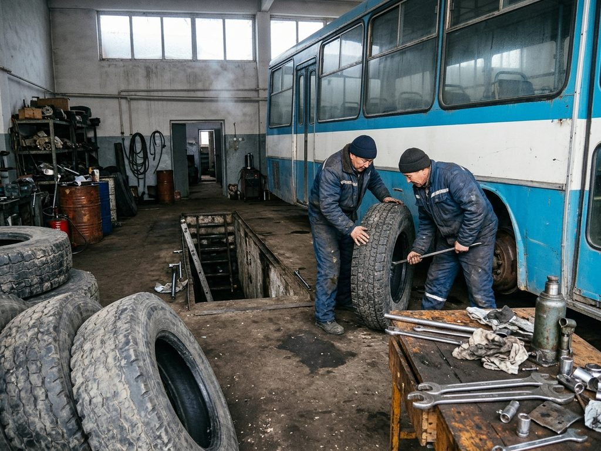

Route changes

Diversions, new routes and changes to the timetable. The newest first.
From 16 November the City Hall's Transport and Roads Department and the traffic police check marshrutkas at the Central Bus Station and the Semiz terminus. A vehicle without winter tyres loses its route licence until they are fitted. Carriers: book the tyre check at the Bus Park workshop (Drivers' Street 7) to avoid the queue.
Under the Mayor's order 418-r of 26 October 2026 the Bus Park moves to the winter timetable on the first day of snow or hard frost in the city, and on 1 December at the latest. Buses start 15 minutes later and finish about 40 minutes earlier; marshrutka carriers may thin their evening trips. The timetable in force today is shown on every page of this site.
Talas Suu is replacing the water main under the road between the Talas railway station and the Station District from 4 November 07:00 to 8 November 20:00. Marshrutka 66 and bus 10 run round by the Alikhan Media Center; the Station District stop moves 200 m towards Gymnasium No. 4. Allow 10 minutes more.
From 3 to 7 November the terminal shuttle at the Air Base South Checkpoint meets buses at the West gate. Bus 31 times do not change. Passengers with flights should take the bus one hour before check-in closes.
From 1 October, three extra buses run on route 4 between TSU and the Central Bus Station from 7:30 to 9:00 on weekdays.
From 1 September buses 10 and 16 add a 7:20 trip from the Bus Park for the schools on the south side (Gymnasium No. 4, the American School).
From 1 July 2026 route 40 runs on from the Bazar-i Kalan across the Old City and the western districts to the Cottonwood Estates terminus (Mayor's order 281-r of 22 June 2026). The fare stays at 2 som. The old Bazar-i Kalan terminus becomes an ordinary stop.
On Irad League match days at the Silk Road Arena the stop by the arena is closed one hour before and after the match. Marshrutkas 31 stop at the Bazar-i Kalan instead.
The Bus Park returns to the summer timetable on 15 April. Last buses on routes 1, 4 and 14 run at 22:00 or later.
For the parade, Central Square and Liberty Boulevard are closed from 07:00 to 14:00. Buses 1, 2, 4 and 5 and marshrutkas through the square turn at the Central Post Office, the Soviet Centre and the Regional Hospital. Free travel on municipal buses all day.
When the road above the Conservatory is not cleared, marshrutka 18 turns at the TSU stop. Drivers announce it at the Soviet Centre.
On the night of 31 December buses 1, 4 and 14 and the marshrutkas on the main routes run until 02:00. Fares do not change.
The first snow fell on 24 November. The winter timetable is in force from 25 November.
Carriers apply for 2026 marshrutka route licences to the City Hall's Transport and Roads Department, room 118, by 1 November. The register of licensed routes on this site is updated in January.
Twelve new Yutong ZK6108 buses bought on the city budget are on routes 4 and 11. The last LiAZ buses on route 4 go to the reserve.
From 22 March to 30 April the Hippodrome stop is at the north gate.
Route 16 opens on 2 September: Central Square - Altyn Tower - Gymnasium No. 4 - Bus Park - American School - Alatau Heights (Plaza). Every 16 minutes at peak times, 2 som.
From 15 April to 30 June marshrutka 22 runs by Attelkom Park and Communications Square while the highway is resurfaced between the Cathedral and the Cold Storage.
The lost property office has moved from the Central Bus Station to the Bus Park, Drivers' Street 7, room 4.
Route 11 runs on from the Customs terminal to the Free Economic Zone gate for the shifts of the factories there.